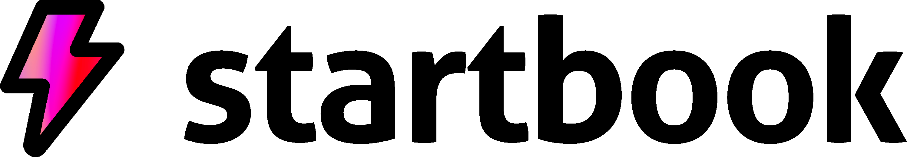

Deadline for submissions: 23:59 on Friday 24th April 2026
For another year, London Youth is partnering with CVC, with additional funding from Infosys and London Stock Exchange Group (LSEG), to offer our members grants to run employability projects for young people during the summer holidays.
Summer Skills projects should creatively empower and support young people aged 14+, in effectively thinking about their future and supporting their personal and professional development. We’ll be funding projects that provide support, training, and skills-based opportunities to young Londoners to kick start their employment pathways. Our members will have the flexibility to tailor the programme based on the needs of their young people and the local area. We’re offering members the opportunity to apply for a grant of up to £4,000 to support delivery, which takes place between July and September 2026.
We’re looking to fund projects that are innovative and creative in supporting young people to think about their employability prospects. We’re particularly looking to support small organisations and/or those that are new to delivering employability support.
All projects are required to demonstrate and work to achieve at least 2 of the following key outcomes:
Included as part of the Summer Skills Grant programme this year, with the support from our partner Infosys, we will be funding five summer skills projects that focus on young girls/women in STEM (Science, Technology, Engineering and Mathematics). If you deliver support with this focus and meet all other requirements of summer skills projects, as detailed above, we encourage you to apply.
Infosys is a leader in digital services and consulting, helping clients navigate their digital transformation and are on a mission to encourage and inspire young girls/women to pursue careers in STEM.
Infosys will also host an insight day for the five successful projects, during the summer, to enhance your project delivery and connect young girls/women to the technology sector and the career opportunities it can offer.
Each member can apply for up to £4,000 to support their organisation’s delivery of activities.
Projects must demonstrate how they will achieve at least two of the following outcomes:
Funding should not be used for equipment or technology unless directly related to the project.
(see Guidance document for more detail)
Below are five examples of Summer Skills Grants projects that were previously funded and successfully delivered:
| Organisation Overview | Project Overview | Who Took Part & What Was Delivered | What Young People Achieved |
|---|---|---|---|
| Supports disabled and neurodiverse youth with employability and mobility services. | Summer Business School on self-employment and entrepreneurship with guest speakers. | 9 participants aged 17–30 from minority backgrounds. 16 sessions, 40 hours. | Learned Canva, branding, marketing, planning, communication, and independence. |
| Youth club with football-oriented programming and community engagement. | Referee training, employability workshops, and match officiating opportunities. | 17 boys aged 14–16. 8 sessions, 33 hours. 14 completed work experience. | Teamwork, leadership, qualifications, confidence, and real match experience. |
| Inclusive performing arts group offering creative and leadership training. | Two-week theatre leadership training with facilitation and live performance. | 4 youth aged 15–23, mostly female. 11 sessions, 72 hours. | Creative skills, teamwork, teaching children, and project delivery confidence. |
| South London charity empowering girls through mentoring and informal learning. | Career-focused camp with STEM, marketing, creative writing, mentoring & more. | 32 girls aged 14–20. 18 sessions, 66 hours. Menu of co-designed activities. | Gained leadership, budgeting, teamwork, career insights, and life skills. |
| Croydon-based charity offering youth leadership, sports, and social action. | Summer employability programme with placements, paid work, and workshops. | 28 youth aged 15–18. 20 sessions, 105 hours of summer activity. | Punctuality, communication, responsibility, and real-world work exposure. |
| Date | Stage |
|---|---|
| Friday, 24th April 2026 | Deadline for submissions |
| From 22nd May 2026 | Decisions communicated to applicants |
| Between July - September 2026 | Project delivery |
Click the "Apply Now" button above to view the submission guidance.
If you require an accessible method/format to apply for this programme, please get in touch at employability@londonyouth.org
Event Delivery Partner:

© ⚡ Startbook 2026. All Rights Reserved.
Startbook is the trading name of STARTBOOK LTD incorporated and registered in England & Wales with company number 12743199 whose registered office is at 124 City Road, London, EC1V 2NX, United Kingdom.